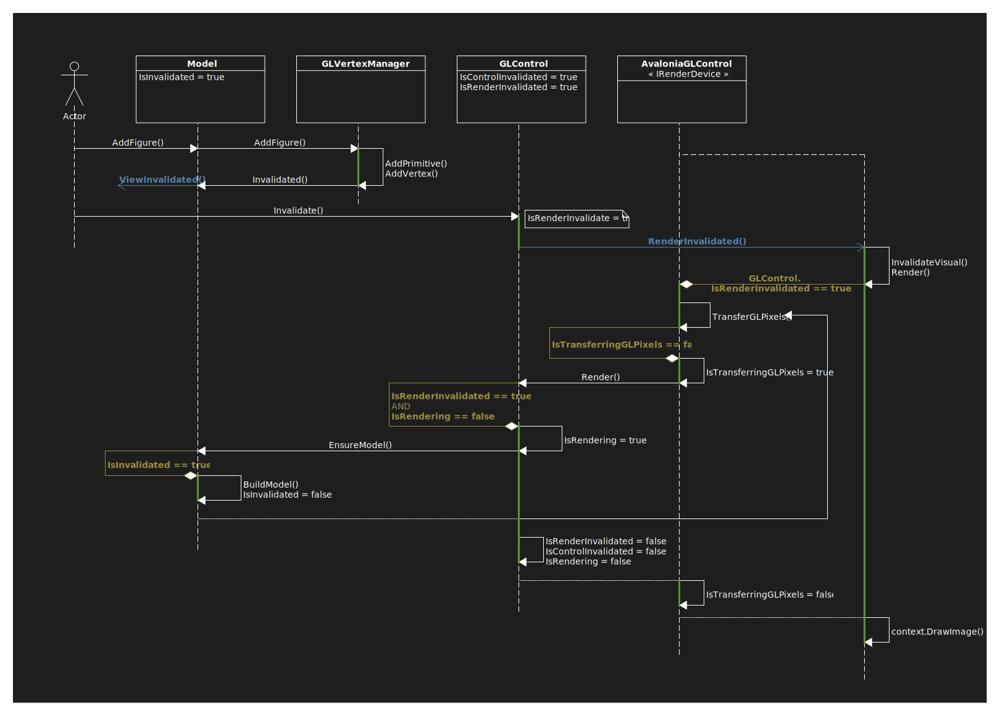

Interface IRenderDevice
- Namespace
- SearchAThing.OpenGL.Core
- Assembly
- netcore-opengl-core.dll
A render device will read pixels from given gl context through ReadPixels and write to an appropriate device implementation ( avalonia, offscreen, dummy devices available ).
public interface IRenderDevice : INotifyPropertyChanged- Inherited Members
Properties
Size
Retrieve actual size of the device screen (pixels).
Size Size { get; }Property Value
TransferGLPixelsCount
Stats counter of TransferGLPixels(GL) calls.
int TransferGLPixelsCount { get; }Property Value
Methods
Post(Action)
Used by GLControl to emit PropertyChanged event.
This is needed in most frameworks that allow ui interactions only from the ui thread itself.
Its necessary expecially if want to access ui data from a separate Task running in parallel.
void Post(Action action)Parameters
actionActionAction to be executed in ui thread.
TransferGLPixels(GL)
Use given GL object to issue a ReadPixel and transfer them to destination device.
Following some details how this function is involved in the rendering process:

Here an example implementation given from the TransferGLPixels(GL):
\snippet{'trimleft'} src/render/OffscreenRenderDevice.cs OffscreenTrasferGLPixels
void TransferGLPixels(GL GL)Parameters
GLGL